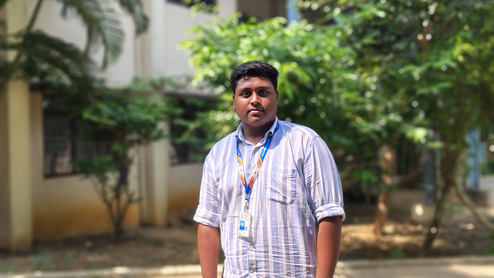

Hey, I'm Manoharan 👨💻
Frontend Developer passionate about crafting smart, stylish, and accessible web and mobile solutions.
Frontend Developer passionate about crafting smart, stylish, and accessible web and mobile solutions.

I'm Manoharan K, a passionate frontend developer and Computer Science Engineering student from Rajalakshmi Engineering College. I enjoy building responsive, interactive, and user-friendly web and mobile applications. My focus is on combining creativity with logic to develop impactful digital solutions.
With expertise in modern JavaScript frameworks and a keen eye for design, I create seamless user experiences that are both beautiful and functional. I'm constantly learning and adapting to new technologies to stay at the forefront of web development.
When I'm not coding, you can find me exploring car technology, capturing moments through photography, or experimenting with videography to enhance my visual design skills.
Python
C
Java
React
React Native
JavaScript
Git
Figma
A smart attendance system that integrates QR code scanning, IP address verification, facial recognition, and video-based headcount using computer vision to ensure accurate and secure student attendance.
Technologies: React Native, Python, OpenCV, Supabase
An IoT-powered smart backpack built with an ESP32, load sensors, NFC module, and haptic feedback system to remind students about missing books or items before leaving for class.
Technologies: IoT, Embedded C, React Native, Firebase
Click below to download my resume
Download ResumeBachelor of Engineering in Computer Science and Engineering
2023 – 2027 | Chennai
Actively pursuing a degree in Computer Science with a keen interest in frontend development, software engineering principles, and smart system design. Currently enhancing practical skills through project-based learning in mobile app development, UI/UX, and IoT integrations.
Higher Secondary Education (HSC)
- Sriperumbudur
Developed a strong academic foundation in core subjects including Mathematics, Physics, Chemistry, and Computer Science. Participated in collaborative learning, practical coding tasks, and early-stage software projects that shaped technical problem-solving skills.
Completed virtual internship focused on software project workflows, agile methodology, and development lifecycle.
Learned real-world software development concepts including DevOps, microservices, and clean code practices.
Explored generative AI use in business data analysis, visualizations, and insights using AI-driven tools.
Completed foundational course on AI applications, ethics, and real-life implementation in industries.